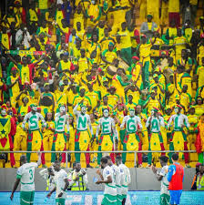

A recent viral sensation among Congo soccer fans is Michel Kuka Mboladinga (known as "Lumumba Vea"), a supporter who became famous at the recent Africa Cup of Nations (AFCON) for standing motionless, like a statue of national hero Patrice Lumumba, for entire matches to give strength to the team, drawing huge attention and becoming an iconic figure of Congolese passion and remembrance
The 12 men that are at every senegalese game no matter where and matter the wheater always shirtless with each of them have a letter and they all toghether spell senegal, The most iconic senegal fans since the histoey of the national team.
